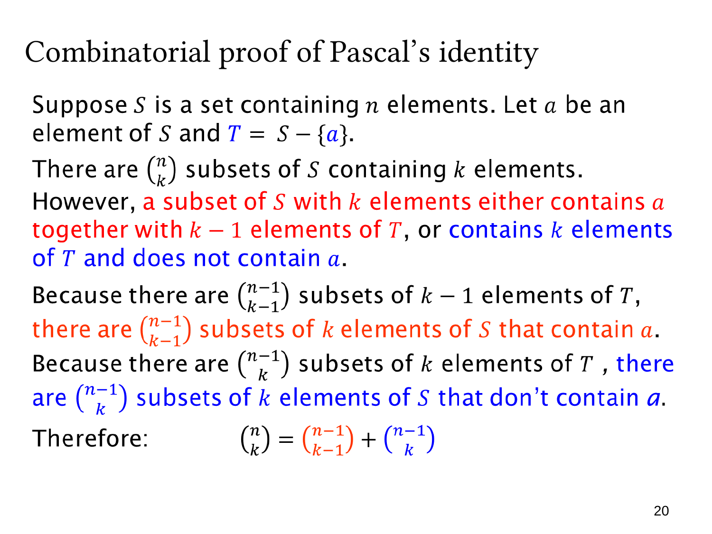

L1.7 · 第 20 页讲解原文
查看这一页课件

用集合 S 与 T 写严谨的帕斯卡证明
设 ∣S∣=n，固定 a∈S，令 T=S∖{a}，因此 ∣T∣=n−1。要数的是 S 的所有 k 元子集，共 (kn) 个。
含 a 的 k 元子集可以唯一写成
B∪{a},B⊆T,∣B∣=k−1.
所以这类数量是 (k−1n−1)。删除 a 是这一对应的逆操作。
不含 a 的 k 元子集本身就是 T 的 k 元子集，所以这类数量是 (kn−1)。
任意子集不是含 a 就是不含 a，且不能同时属于两类。因此
(kn)=(k−1n−1)+(kn−1).
本页用红色标记含 a 的情况，蓝色标记不含 a 的情况。它将前面的例子整理为适用于任意 n,k 的集合证明，关键是对应关系、类别互斥与覆盖性。
a 是集合中事先选定的一个参照元素，整个证明不枚举参照元素的选择，也不因此乘以 n。